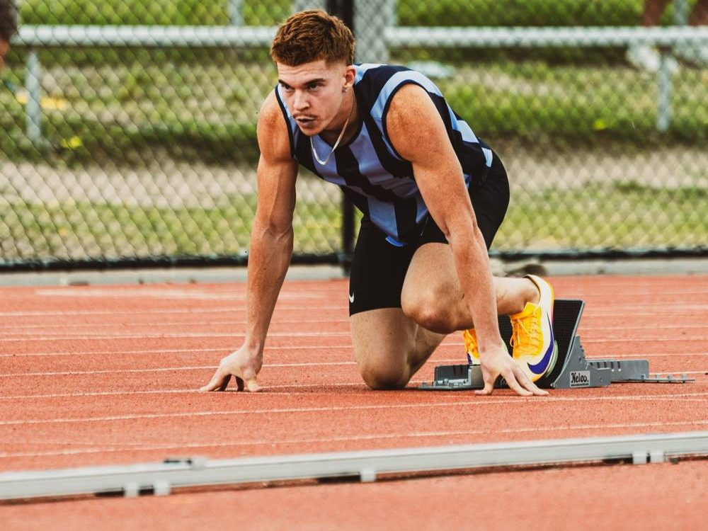

My story
I did Little Athletics as a jumper and was told I wasn't fast enough to sprint. At 17 I ran 11.9 in Crocs at my school carnival and took it up with my best mate, Ronald.
Now I train with Project Elite Track Squad under Coach Rob.